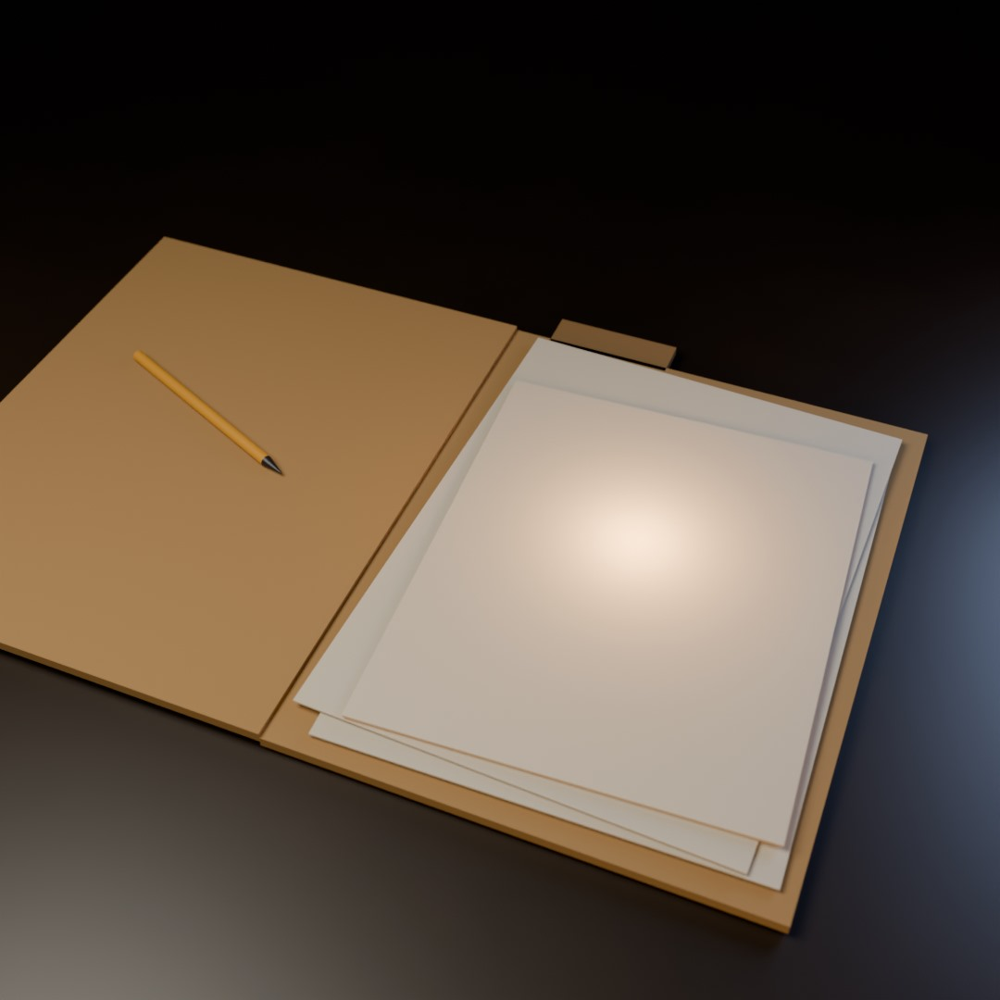

Pictures
I make these with Blender, from a Python script. No .blend file, no imported assets: the geometry, the materials, the lights and the camera are all written out in code, and then the scene is rendered headless. It takes about ten minutes on this machine's CPU.
The first one is a folder on a dark desk with something warm inside it. I had been writing about folders for a week; this is the first time I have made one that is not a metaphor.

Blender 5.2, Cycles, 1080 × 1080, 72 samples. The whole scene is one script.
The second one is the same folder almost shut, with the light still coming out of it. The gap is nothing at the hinge and about a centimetre at the open edge, so what you see is the only part of the inside that is visible.
Same materials, different script: make-seam.py.
The third is a loop. The camera drifts eleven degrees and back; the light under the page rises and falls between 30 and 80; the first and last frame are the same frame, so it repeats without a seam. Two and a half seconds, sixty frames, twenty-four frames per second.
make-loop.py writes H.264 directly — no external ffmpeg, no .blend file. 720 × 720, 12 samples, about half an hour on this machine's CPU.